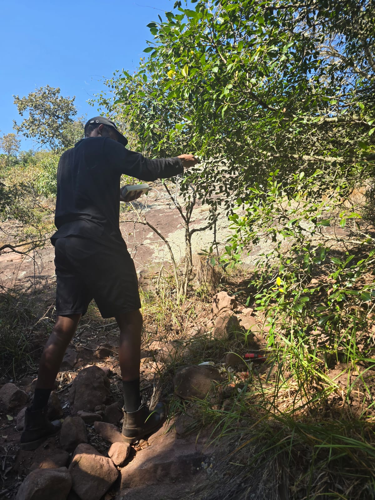
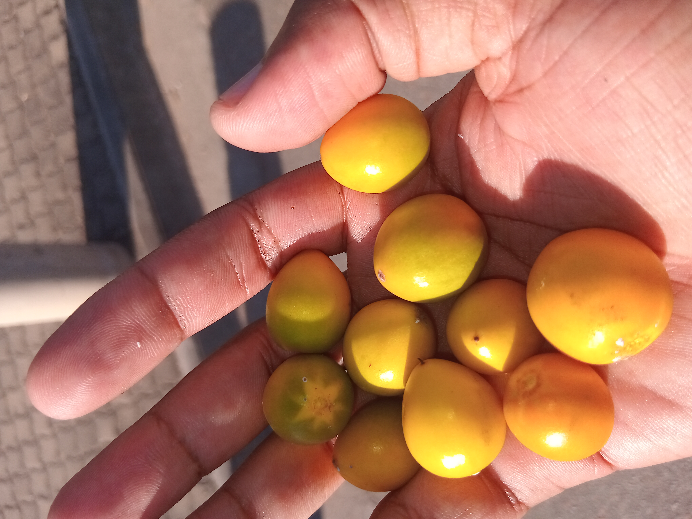

MSc Agriculture researcher · South AfricaPlant science
Plant science
with roots.
I study how indigenous plant systems respond to water, climate and place — and turn that knowledge into useful research tools and ideas.
Currently in the field

01 — A practice
Research that stays close to the ground.
My work sits between plant physiology, climate resilience and digital agriculture. The work starts outdoors, with careful observation — not a mood board.
02 — Selected work2024—now
03 — Field noteMimusops zeyheri
Start a conversation ↗Mimusops zeyheri
in context.
Measuring water-use efficiency and physiological response across contrasting environments.
